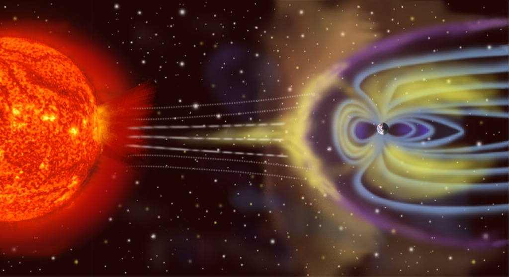
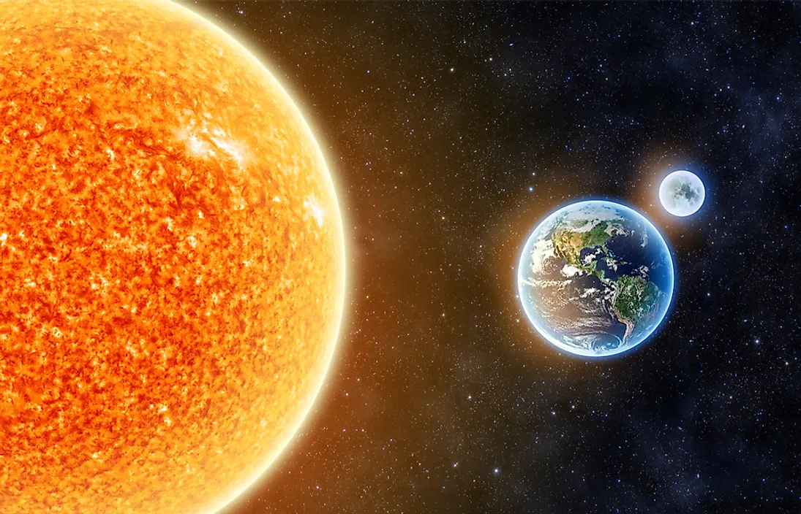

We live in a small planet. We live in this planet because we can`t live in another planets.
Earth is the third planet from the Sun and the only place known in the universe where life has
originated and found habitability. Earth is the only planet to sustain liquid surface water, with ocean water
extending over 70.8% of the planet, making it an ocean world. Most of all other water is retained in Earth's
polar regions, with large sheets of ice covering ocean and land, dwarfing Earth's groundwater, lakes, rivers and
atmospheric water. The other 29.2% of the Earth's surface is land, consisting of continents and islands, and is
widely covered by vegetation. Below the planet's surface lies the crust, consisting of several slowly moving
tectonic plates, which interact to produce mountain ranges, volcanoes, and earthquakes. Inside the Earth's crust
is a liquid outer core that generates the magnetosphere, deflecting most of the destructive solar winds and
cosmic radiation.

Earth has a dynamic atmosphere, which sustains Earth's surface conditions and protects it from most meteoroids
and UV-light at entry. It has a composition of primarily nitrogen and oxygen. Water vapor is widely present in
the atmosphere, forming clouds that cover most of the planet. The water vapor acts as a greenhouse gas and,
together with other greenhouse gases in the atmosphere, particularly carbon dioxide (CO2), creates the
conditions for both liquid surface water and water vapor to persist via the capturing of energy from the Sun's
light. This process maintains the current average surface temperature of 14.76 °C, at which water is liquid
under atmospheric pressure. Differences in the amount of captured energy between geographic regions (as with the
equatorial region receiving more sunlight than the polar regions) drive atmospheric and ocean currents,
producing a global climate system with different climate regions, and a range of weather phenomena such as
precipitation, allowing components such as nitrogen to cycle.
Earth is rounded into an ellipsoid with a circumference of about 40,000 km. It is the densest planet in the
Solar System. Of the four rocky planets, it is the largest and most massive. Earth is about eight light-minutes
away from the Sun and orbits it, taking a year (about 365.25 days) to complete one revolution. The Earth rotates
around its own axis in slightly less than a day (in about 23 hours and 56 minutes). The Earth's axis of rotation
is tilted with respect to the perpendicular to its orbital plane around the Sun, producing seasons. Earth is
orbited by one permanent natural satellite, the Moon, which orbits Earth at 384,400 km (1.28 light seconds) and
is roughly a quarter as wide as Earth. Through tidal locking, the Moon always faces the Earth with the same
side, which causes tides, stabilizes Earth's axis, and gradually slows its rotation.

Earth, like most other bodies in the Solar System, formed 4.5 billion years ago from gas in the early
Solar
System . During the first billion years of Earth's history, the ocean formed and then life developed within it.
Life spread globally and has been altering Earth's atmosphere and surface, leading to the Great Oxidation Event
two billion years ago. Humans emerged 300,000 years ago in Africa and have spread across every continent on
Earth with the exception of Antarctica. Humans depend on Earth's biosphere and natural resources for their
survival, but have increasingly impacted the planet's environment. Humanity's current impact on Earth's climate
and biosphere is unsustainable, threatening the livelihood of humans and many other forms of life, and causing
widespread extinctions.[24]